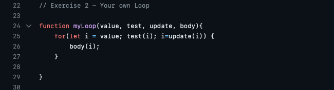
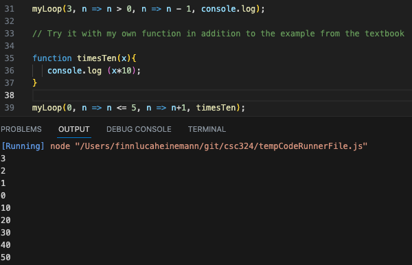

Eloquent Javascript - Chapter 5, Problem 2: Your own Loop
Instructions
Write a higher-order function loop that provides something like a for loop statement. It takes a value, a test function, an update function, and a body function. Each iteration, it first runs the test function on the current loop value and stops if that returns false. Then it calls the body function, giving it the current value. Finally, it calls the update function to create a new value and starts from the beginning.
When defining the function, you can use a regular loop to do the actual looping.
My Code

Explanation of the Code
I start declaring the function in line 24 with the name “myLoop”. The function has the parameters “value”, “test”, “update”, and “body”. Value is the starting value of the loop, test is the argument that the value is tested for and results in either being true or false, update is what how value should be updated for the next step, in order to go to the next value, and body shows what should be done with the function.
The function basically consists of one for-loop only. A for-loop needs 3 arguments: 1. The first argument is “i”, which is the starting value of the loop 2. The second argument shows what i should be compared to in order to determine if the loop should go on or should terminate 3. The third argument signals how i should be updated to move on in the loop
The body of a for-loop contains the code that determines what is actually supposed to happen with each value/ how each value should be “modified”
As we can see, the parameters of the function match up very-well with the needed arguments for a for-loop.
Therefore in our for-loop i should be equal to value (i=value), i should be teasted with the for what is determined in the parameter of the function (test(i)), and i should be updated by what is set for update (i=update(i)). Then, inside the for-loop i should be modified based on what is given for the body-parameter from the function (body(i)).
The code is very simple but at the same time very effective in creating a loop with the arguments given as parameters for the function.
After that, I tried the function with a specific example to make sure it works properly, like the instructions from the book command.
Output & Explanation of the output

Firstly, I test the myLoop function with a start value of 3, the test is if the value is still bigger than 0, and the update of the value should be that it decreases by one everytime it goes through the loop. The body of the function is the function colsole.log which just prints out the input value in the console. We cxan see that the function does exactly that - prints out 3, then 2, then 1.
Secondly, I wanted to try the function eith my own example, where I firdt wrote a function called “timesTen”, which simply multiplies the input value by 10 and then prints out the result. Then I tested the myLoop function with the start value of 0, the test shall be if the value is smaller or equal to five, and the value should increase by 1 every time we go through the loop. The body of the function shall be the earlier declared timesTen function. Consequently, the output were 0, 10, 20, 30, 40, and 50. So what happened was that the function took every number from 0 to 5, multiplied every by 10, and then printed out each result in the console.
The javascript file with the full code can be found here!